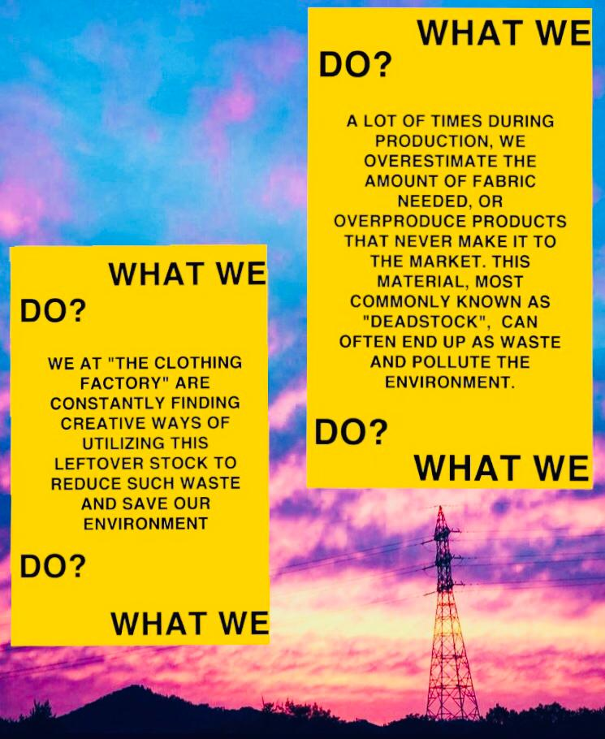
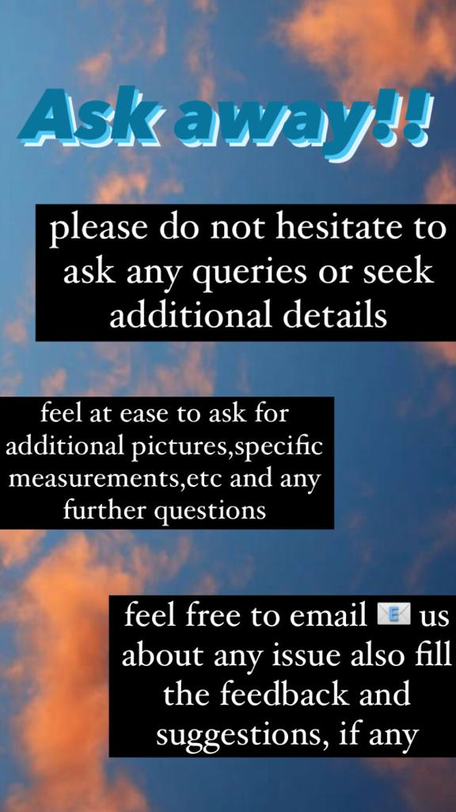
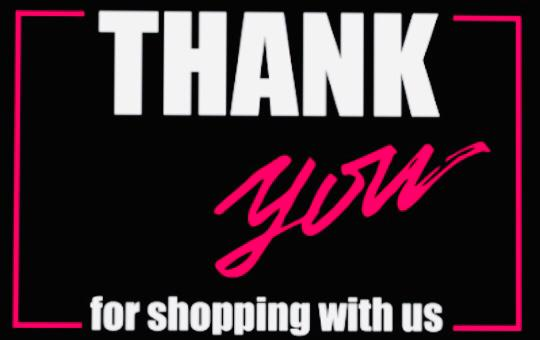

Accepting credit/debit card payments. Since 90 percent of all Internet payments are made by credit card, our first priority is to get ourself
set up with this payment option as quickly as possible. We've seen businesses increase their sales by as much as 400 percent right after they
gave their consumers this convenient way to pay.Let's face it: The entire mentality of the Internet is "instant" access to information, products
and services. If your potential buyers have to stop surfing and free up their phone lines, call in their orders or, even more time-consuming,
hunt around for their checkbooks, envelopes and stamps, your order process will discourage
all but the most resolute shoppers.
Payment Option #2
Accepting e-wallets (digital wallets). Right now, there's some disagreement on what exactly an e-wallet is. Many companies are calling their
products e-wallets, yet, since there's no standard, their interpretations vary widely. e-wallets can be placed into two broad categories based
on their capabilities.
Payment Option #3
Bank transfers or net banking ranks as the third most common way you can use for online shopping in India. Over 20 percent of all shoppers
make payments with their net banking facility, also known as bank transfers.Thank to net banking apps and ease of use, bank transfers are
also possible with smartphones. They’re very secure since making payments requires fingerprint or username and password login and various
other authentication. Without these, the bank doesn’t approve the payment.
About Us


